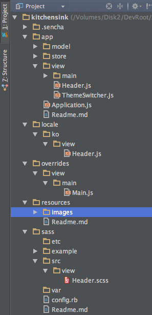
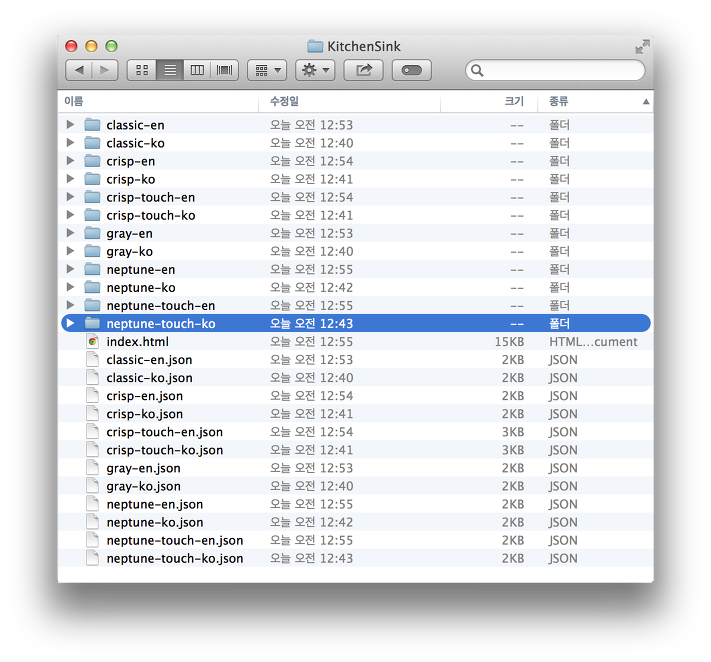
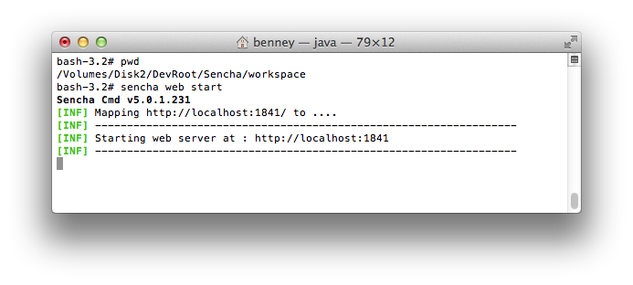
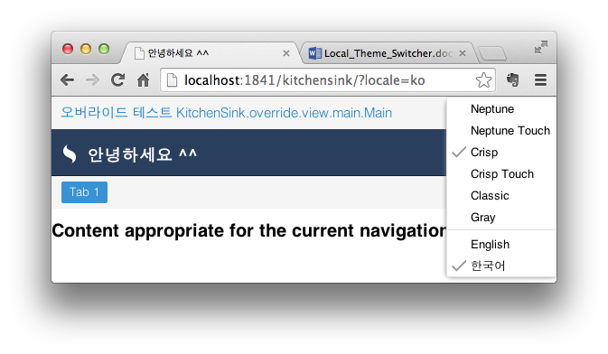

ExtJS 4 멀티테마와 로케일 설정
이번 강의는 애플리케이션에 내에서 테마를 변경하는 방법과 다국어를 설정하는 방법에 대해 알아볼 것이다. ExtJS5는 총4개의 테마와 모바일용 touch용 까지 세분화해 총6개의 테마를 지원한다. 일반적으로 한개의 테마만 사용하여 시스템을 구축할 것이다. 그러나 때에 따라 테마를 변경하거나 모바일에서 접근할 경우를 대비 neptune-touch, crisp-touch테마로 전환할 필요가 있다. 또한 한국어를 포함한 영어, 일어 등 애플리케이션 내부에서 언어를 선택할 수 있도록 다국어 지원 방법을 알아보도록 하자.

그림 1 다중테마와 다국어를 지원하는 앱
이 강좌는 KitchenSink앱을 분석하고 분석 내용을 공유한다. 더 자세한 내용을 알고 싶다면 KitchenSink앱을 자세히 분석해 보길 바란다.
이번 강좌는 아래 환경에 맞춰 진행한다.
- Sencha CMD : 5.0.1.231
- ExtJS : 5.0.1
테스트용 App생성
테스트용 앱을 생성할 것이다. 이를 위해 Sencha CMD가 필요하다. 버전5에 이르러 Sencha CMD는 시작과 끝을 이어주는 필수적인 도구로 사용된다.
필자는 앱이 생성될 루트에 workspace를 생성하고 진행하였다. 이렇게 하면 모든 앱마다 존재하는 ext폴더는 workspace루트에 하나만 존재하고 이하 모든 앱이 이를 공유하는 형태로 개발되게 된다. 빌드의 결과물 또한 workspace/build 폴더에 저장된다. sencha app watch 를 사용할 경우 이 workspace가 웹루트로 작동 할 것이다.
workspace를 생성하자.
sencha generate workspace ./workspace
생성된 workspace폴더로 이동하고 App을 생성하자.
sencha generate app -ext KitchenSink ./kitchensink

그림 2 워크스페이스 생성후 kitchenSink앱을 생성한다.
Manifest 지정하기
아래 코드는 앱루트의 index.html 파일이다. 굵은 <script.. var Ext = Ext||로 시작하는 부분이 새로 추가한 부분이다. Ext.beforeLoad 함수를 구현하고 있다. 이 함수는 bootstrap.js파일 내부에서 호출되며 Microloader클래스 내부에서 앱실행에 필요한 로드과정 전에 Ext.beforeLoad함수가 존재하면 실행되도록 했다.
<!DOCTYPE HTML>
<html manifest="">
<head>
<meta http-equiv="X-UA-Compatible" content="IE=edge">
<meta charset="UTF-8">
<title>KitchenSink</title>
<!-- The line below must be kept intact for Sencha Cmd to build your application -->
<script type="text/javascript">
var Ext = Ext || {};
Ext.repoDevMode = true;
Ext.beforeLoad = function(tags){
var theme = location.href.match(/theme=([\w-]+)/),
locale = location.href.match(/locale=([\w-]+)/);
theme = (theme && theme[1]) || (tags.desktop ? 'crisp' : 'crisp-touch');
locale = (locale && locale[1]) || 'en';
Ext.manifest = theme + "-" + locale;
Ext.microloaderTags = tags;
};
</script>
<script id="microloader" type="text/javascript" src="bootstrap.js"></script>
</head>
<body></body>
</html>Ext.beforeLoad함수 내부에서 우리는 theme와 locale을 정하고 이를 Ext.manifest에 설정하고 있다. 앱에 대한 세부사항을 설정하는 app.json 파일은 Sencha CMD에 의해 런타임시 Ext.manifest에 전달하게 된다. 앱은 런타임시 이 manifest의 내용을 분석하여 앱실행에 관련된 모든 컨텐츠를 로딩하게 되는 것이다.
app.json파일 수정
이 파일은 앱에 대한 세부사항을 지정하는 파일이다. 이 파일은 Sencha CMD에 의해 생성되고 소비된다. 이 파일의 내용에 의해 Sencha CMD는 런타임에 사용할 Microloader내부의 Manifest에 전달한다.
override설정
app.json파일 내부의 override설정은 기본값이 ${app.dir}/override이다. override는 app폴더내부 클래스를 재정의하여 클래스를 변경하고 적용할 수 있다. 다국어를 지원하기 위한 locale설정 또한 기존 클래스 변수의 내용을 재정의하는 것으로 가능한 것이다.
override설정을 아래와 같이 변경하자.
"overrides": "${app.dir}/overrides,${app.dir}/locale/${app.locale}",
아래 그림은 실제 적용 시 폴더구조의 모습이다.

그림 3 override설정을 완료한 후 폴더구조
requires설정
app.json내부 requires설정은 추가 패키지를 설정하고 다운로드 한다. 차트나 로케일 설정은 기본 패키지에 제외되어 있으므로 설정에 포함해야 한다.
"requires": [
"ext-locale"
],
css설정
기본 값은 "path":"bootstrap.css"일 것이다. 이 파일은 개발모드에서 테마파일의 위치를 알려주는 파일이다.
앱 생성 후 최초의 모습은 아래와 같다.
@import '../ext/packages/ext-theme-neptune/build/resources/ext-theme-neptune-all.css';
패스를 잘 확인해 보자. workspace 아래 ext(sdk)폴더를 가리키고 있다. 이 파일은 sencha app watch명령이나 sencha app build명령에 의해 아래처럼 바뀔 수 있다.
sencha app watch
@import '../build/development/KitchenSink/resources/KitchenSink-all.css';
watch 모드가 작동하면 bootstrap.css파일 내부는 위와 같이 변경된다. watch명령은 개발을 위한 pre build와 jetty서버를 지원한다. build 폴더의 위치는 workspace\build이고 개발 모드를 위한 development폴더 아래 해당 앱이름으로 폴더가 생성되게 된다.
sencha app build 명령 이후 bootstrap.css 파일은 아래처럼 변경된다.
@import '../build/production/KitchenSink/resources/KitchenSink-all.css';
workspace/build폴더 아래 배포를 위한 production 폴더가 생성되고 해당 앱이름으로 압축과 최적화를 마친 파일들이 위치하게 된다.
다국어 지원을 위해 우리는 app.json내부 css설정을 변경해야 할 것이다. 일반적인 경우 이 설정을 변경할 필요가 없을 것이다. 그러나 다국어를 가능하게 할 경우 해당 언어별로 빌드가 여러 번 이루어져 실행되는 환경이기 때문이다.
"css": [
{
"path": "${build.out.css.dir}/KitchenSink-all.css",
"bootstrap": true
}
],
테마파일의 위치를 동적으로 변경하기 위해 변수처리했다. build.out.css.dir변수는 해당 앱이 빌드 된 후 테마파일이 위치할 resources폴더를 의미한다.
bootstrap설정
bootstrap설정은 삭제하자. 이 설정은 bootstrap.json, boostrap.css파일 등을 생성하게 되는데 우리는 이 설정을 대체하는 설정을 추가할 것이다.
// 아래 주석처리할 것.
/*"bootstrap": {
"base": "${app.dir}",
"manifest": "bootstrap.json",
"microloader": "bootstrap.js",
"css": "bootstrap.css"
},*/
"manifest": {
"name": "${build.id}.json",
"bootstrap": "${build.id}.json"
},
manifest설정은 각 테마와 로케일 별로 조합하여 생성하게 된다. 아직 구체적인 모습이 연상되지 않을 것이므로 $build.id변수에 의해 json파일이 여러 개 생성된다는 것만 알아 두자.
output설정
이 설정은 Sencha CMD의 3가지 output에 대한 위치를 지정한다. output은 production, development, testing으로 각각 배포, 개발, 테스팅의 용도로 파일이 생성된다. 기본 설정은 아래와 같다.
"output": {
"base": "${workspace.build.dir}/${build.environment}/${app.name}"
},
${workspace.build.dir}은 workspace/build이거나 workspace를 생성하지 않았다면 해당 앱 이하 build폴더를 의미한다. ${build.enviroment}는 위에서 설명한 3가지 빌드 모드를 의미하며 실행명령에 따라 다음과 같이 달라질 것이다.
sencha app watch : workspace/build/development
sencha app build : workspace/build/production
sencha app build -c testing : workspace/build/testing
우리 의도에 맞도록 변경해야 한다. 핵심은 ${build.id}이다.
"output": {
"base": "${workspace.build.dir}/${build.environment}/${app.name}/${build.id}",
"page": "../index.html",
"manifest": "../${build.id}.json",
"deltas": {
"enable": false
},
"cache": {
"enable": false
}
},
locale설정
필요한 언어를 설정하자. 우리는 한국어와 영어를 지원하도록 설정하자.
"locales": [
"en",
"ko"
],
builds 설정
앱 여러 종류의 테마를 적용할 수 있다. 이 설정 내부의 테마는 locales설정과 함께 곱하기 하여 빌드된다. 꼭 필요하지 않다면 아래 처럼 모두를 포함시키지는 말자. 빌드 시간이 엄청나게 늘어날 수 있다.
"builds": {
"classic": {
"theme": "ext-theme-classic"
},
"gray": {
"theme": "ext-theme-gray"
}
"crisp": {
"theme": "ext-theme-crisp"
},
"crisp-touch": {
"theme": "ext-theme-crisp-touch"
},
"neptune": {
"theme": "ext-theme-neptune"
},
"neptune-touch": {
"theme": "ext-theme-neptune-touch"
}
},
build.id는 위의 테마와 로케일을 모두 생성해 낸다. 아래 예를 참고하자.
1. classic-en
2. classic-ko
3. gray-en
4. gray-ko
5. crisp-en
6. crisp-ko
7. crisp-touch-en
8. crisp-touch-ko
9. neptune-en
10. neptune-ko
11. neptune-touch-en
12. neptune-touch-ko
테마와 언어별로 각각 빌드를 생성한다면 2개의 언어 * 6개의 테마를 곱하여 총 12개의 빌드가 각기 생성될 것이다.
소스코드
설정을 마쳤으니 테마변경과 로케일 설정을 확인하기 위한 소스코드를 생성하자. 이 클래스는 Main.js내부에 추가되고 테마와 언어를 변경할 수 있게 한다.
Ext.define('KitchenSink.view.Header', {
extend: 'Ext.Container',
xtype: 'appHeader',
id: 'app-header',
title: 'Ext JS Kitchen Sink',
height: 52,
layout: {
type: 'hbox',
align: 'middle'
},
initComponent: function() {
document.title = this.title;
this.items = [{
xtype: 'component',
id: 'app-header-logo'
},{
xtype: 'component',
id: 'app-header-title',
html: this.title,
flex: 1
}];
if (!Ext.getCmp('options-toolbar')) {
this.items.push({
xtype: 'themeSwitcher'
});
}
this.callParent();
}
});Header클래스 내부에서 테마와 로케일을 설정하는 ThemeSwitcher클래스를 생성하자.
Ext.define('KitchenSink.view.ThemeSwitcher', function() {
var theme = location.href.match(/theme=([\w-]+)/),
locale = location.href.match(/locale=([\w-]+)/);
theme = (theme && theme[1]) || (Ext.microloaderTags.desktop ? 'crisp' : 'crisp-touch');
locale = locale && locale[1] || 'en';
if (!Ext.themeName && !!theme) {
var m = theme.match(/^([\w-]+)-(?:he)$/);
Ext.themeName = m ? m[1] : theme;
}
return {
extend: 'Ext.Container',
xtype: 'themeSwitcher',
id: 'theme-switcher-btn',
margin: '0 10 0 0',
layout: 'hbox',
initComponent: function() {
function setQueryParam(name, value) {
var query = Ext.Object.fromQueryString(location.search);
query[name] = value;
location.search = Ext.Object.toQueryString(query);
}
function makeItem(value, text, paramName) {
paramName = paramName || "theme";
var checked = value === (paramName == "theme" ? theme : locale);
return {
text: text,
group: (paramName == 'theme' ? 'themegroup' : 'localegroup'),
checked: checked,
handler: function () {
if (!checked) {
if(paramName == 'theme') {
setQueryParam('theme', value);
} else {
setQueryParam('locale', value);
}
}
}
};
}
var menu = new Ext.menu.Menu({
items: [
makeItem('neptune', 'Neptune'),
makeItem('neptune-touch', 'Neptune Touch'),
makeItem('crisp', 'Crisp'),
makeItem('crisp-touch', 'Crisp Touch'),
makeItem('classic', 'Classic'),
makeItem('gray', 'Gray'),
'-',
makeItem('en', 'English', 'locale'),
makeItem('ko', '한국어', 'locale')
]
});
this.items = [{
xtype: 'component',
id: 'theme-switcher',
cls: 'ks-theme-switcher',
margin: '0 5 0 0',
listeners: {
scope: this,
click: function (e) {
menu.showBy(this);
},
element: 'el'
}
}];
this.callParent();
}
};
});Main 클래스 내부에서 Header클래스를 호출하도록 수정한다.
Ext.define('KitchenSink.view.main.Main', {
extend: 'Ext.panel.Panel',
xtype: 'app-main',
requires: ['KitchenSink.view.Header'],
controller: 'main',
viewModel: {
type: 'main'
},
layout: {
type: 'border'
},
items: [{
xtype: 'appHeader',
region : 'north'
},{
region: 'center',
xtype: 'tabpanel',
items:[{
title: 'Tab 1',
html: '<h2>Content appropriate for the current navigation.</h2>'
}]
}]
});index.html 내부에서 기본 테마와 로케일 설정은 crisp-en일 것이다. 물론 desktop일 경우를 예로 한다. 이후 ThemeSwitcher에 의해 언어를 영어에서 한글로 변경하면 한글로 전환 되는 것을 확인하기 위해 앱루트에 locale폴더를 생성하고 Header클래스를 아래와 같이 생성할 것이다. 이 클래스는 한글을 포함하고 있다. 한글 지원 Header클래스의 위치는 /locale/ko/view/Header.js이다.
Ext.define('KitchenSink.locale.view.Header', {
override: 'KitchenSink.view.Header',
title: '안녕하세요 ^^'
});한가지 더 테스트 하자. 위의 Header클래스는 한글을 지원하기 위해 기존 app폴더의 Header클래스를 override하고 있다. 이것은 일반적인 override와 동일하므로 일반적인 override도 같이 테스트 하자.
app.json설정을 통해 앱루트 아래 override폴더에 해당 클래스를 위치 시켜보자.
Ext.define('KitchenSink.override.view.main.Main', {
override: 'KitchenSink.view.main.Main',
title: '오버라이드 테스트 KitchenSink.override.view.main.Main'
});이 클래스는 로케일 설정과 별개로 기존 Main클래스의 title설정을 대체 할 것이다.
이제 Header클래스가 실행될 경우 필요한 css를 준비하자. ExtJS는 시스템에 css를 적용하기 위해 sass를 이용한다. 앱루트의 sass폴더에 각 클래스에 적용할 css를 sass형태로 코딩하여 추가하면 빌드시 테마에 적용될 것이다.
/sass/src/view/Header.scss파일을 추가하자. 이 파일은 테마별로 다른 css스타일을 적용하는 코드다.
$kitchensink-header-background-color: #333;
$kitchensink-header-text-color: #fff;
$kitchensink-header-text-shadow-color: null;
$kitchensink-header-use-gradient: true;
@if $theme-name == 'ext-theme-neptune' or $theme-name == 'ext-theme-neptune-touch' {
$kitchensink-header-background-color: #81af34;
$kitchensink-header-text-shadow-color: #4e691f;
}
@if $theme-name == 'ext-theme-classic' or $theme-name == 'ext-theme-gray' {
$kitchensink-header-background-color: darken($base-color, 55%);
}
@if $theme-name == 'ext-theme-crisp' or $theme-name == 'ext-theme-crisp-touch' {
$kitchensink-header-background-color: #2a3f5d;
$kitchensink-header-use-gradient: false;
}
#app-header {
background-color: $kitchensink-header-background-color;
@if $kitchensink-header-use-gradient {
@include background-image(linear-gradient(top, lighten($kitchensink-header-background-color, 5), darken($kitchensink-header-background-color, 5)));
}
border-bottom: 1px solid darken($kitchensink-header-background-color, 15);
@if $theme-name == 'ext-theme-neptune' {
.#{$prefix}nlg & {
background-image: url(images/header-bg.png);
}
}
}
#app-header-title {
padding: 15px 0 10px 0;
color: #fff;
font-size: 18px;
font-weight: bold;
@if $kitchensink-header-text-shadow-color != null {
text-shadow: 0 1px 0 $kitchensink-header-text-shadow-color;
}
}
#app-header-logo {
width: 40px;
height: 25px;
background: url(images/logo.png) no-repeat center 4px;
}
#theme-switcher-combo-labelEl {
color: $kitchensink-header-text-color;
font-weight: bold;
}
.ks-theme-switcher {
background-image: url(images/options.png);
width: 22px;
height: 22px;
}위의 파일에서 로딩하는 각종 이미지 파일은 kitchenSink예제의 resources/images폴더를 복사하도록 하자.
최종 폴더 구조는 그림과 같다.

*그림 4 최종 폴더구조.
최종 빌드
이제 마지막 빌드과정이 남았다. 해당 앱루트로 접근하고 sencha app build 명령을 수행하자. 위에서 언급했듯이 총6개의 테마와 2개의 언어가 모두 빌드되려면 총 12번의 빌드과정을 거치게 되어 상당한 시간이 소요될 것이다.

*그림 5 최종 폴더구조.
빌드가 완료되면 workspace/kitchensink폴더 내부를 확인하자. 그림처럼 총 12개의 json파일이 테마와 로케일 설정별로 생성된 것이 보일 것이다. 이 총12개의 파일이 app.json의 설정에 의해 생성된 manifest이고 이 파일별로 테마와 언어가 다르게 실행되는 것이다.

*그림 6 빌드 완료후 앱 내부의 테마와 로케일 설정파일 *
그렇다면 최종 빌드파일은 어떤 모습인지 확인해야 할 것이다. sencha app build명령은 production 빌드이므로 workspace/build/production/kitchensink폴더에 빌드파일을 저장했을 것이다.

*그림 7 빌드완료 후 build/production/kitchensink폴더의 모습 *
상당히 많은 량의 파일이 생성되었음을 볼 수 있다. 각 테마와 로케일 별로 총12개의 개별 빌드 폴더가 생성되어 독립적으로 실행가능 될 수 있다.
완료된 결과를 브라우저를 통해 확인하자. workspace루트로 이동하여 sencha web start 명령을 실행하자.

*그림 8 sencha web start명령의 실행 *
오른쪽 아이콘을 클릭해 언어를 한국어로 변경하면 기존 영문이 한글로 표시될 것이다.

*그림 9 최종 실행결과 *